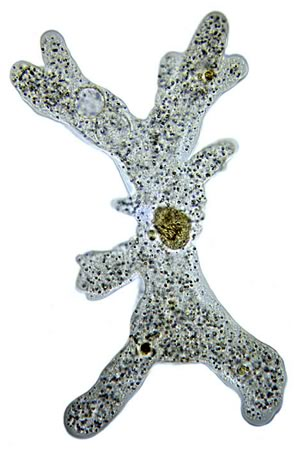

| Optional readings & such: |
16 Sept. 2015: Charles Darwin & the Bible 14 Sept. 2015: Global warming and giant viruses 10 Sept. 2015: Homo naledi: new species of ancient humans and fuzzy bounderies 4 Sept. 2015: Getting scooped and the discovery of the genetic code 2 Sept. 2015: Human-Size Sea Scorpion Found in Meteorite Crater 28 Aug.2015: Birth of the moralizing gods and podcast 24 Aug. 2015: The Widening World of Hand-Picked Truths
|
 |
20 Aug. 2015: Cells in Living Things Fight Noise with Noise 18 Aug. 2015: A Surprise Source of Life’s Code 28 July 2015: At Tiny Scales, a Giant Burst on Tree of Life 22 July 2015: Resolving social conflict is key to survival of bacterial communities |